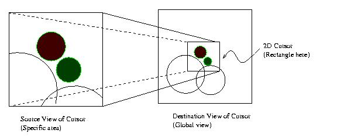
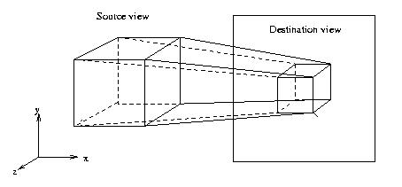
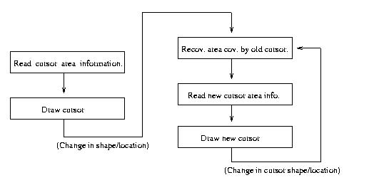
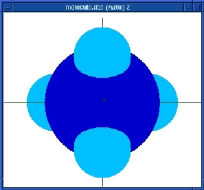
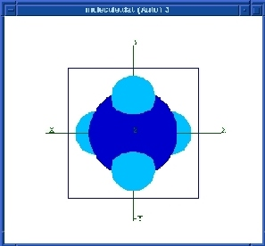
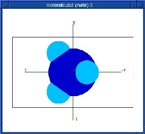
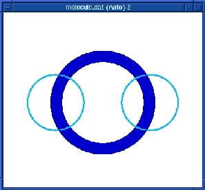
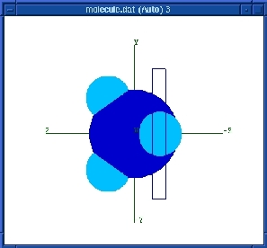

CS784 Project:
2D and 3D Cursor Implementation in DEVise
Zhenhai Lin, Liping Zhang
April 30, 1998
2D and 3D Cursor Implementation in DEVise
1. Introduction
DEVise is a system that supports visual query, which is an abstract description of a collection of data that are mapped to the screen. The implementation of 2D and 3D cursor in DEVise will enable users to check one or more specific areas of a visual result on the screen in detail after successfully obtaining the global view. Fig 1 shows the principle of 2D cursor in DEVise and the relation between a global view and a specific area view defined by this cursor.

Fig 1: The principle of 2D cursor in DEVise
In our implementation, a 2D cursor is a rectangle in destination view showing the area that the source view covers. A 3D cursor is a rectangle block in destination view showing the left, right, top, bottom, front and back cutting plane of the source view. The cursor position and shape change at the source view of the cursor will be changed accordingly in the destination view. With the zoom functionality in DEVise, the selected area can be zoomed in or out accordingly. The 3D cursor can let the user to cut out any part of a 3-D object and view it from different angels.

Fig 2. The principle of 3D cursor
The basic idea of the cursor implementation is that when a user moves a cursor object on the destination view, the part covered by the cursor need to be recovered to its state before while the part which will be covered by the cursor need to be hidden. Additionally, for efficiency reason, the implementation must avoid redrawing the graphic from raw data in the database. The original 2D cursor implementation in DEVise used XOR method to achieve this goal. The first time XOR will Êcreate∆ the cursor while the second time XOR will hide the cursor effects and recover to its state before. It has the disadvantage of manipulating color index bitwise and generate some indices which might not have been allocated. Another serious problem is that it's impossible to implement 3D cursor by extending this 2D cursor model (XOR). The XOR operations couldn't be applied to the depth buffer in the 3D case. The depth buffer algorithm is
If ( depth[x][y] > newdepth ) {
depth[x][y]=newdepth;
color[x][y]=newcolor;
}
Obviously, it doesn't make sense to XOR bitwise to depth value, which will damage the depth buffer badly and other objects in the buffer couldn't be drawn correctly later. It is almost impossible to add any further functions to the 2D cursor and implement the 3D cursor in DEVise before this problem is fixed.
In this project, we have implemented 2D and 3D cursors using the OpenGL graphics library.
2. Design and Implementation
In this project, we have implemented both 2D and 3D cursor using OpenGL graphics library in a unified way. Before the cursor is drawn, we calculate the area that is potentially covered by the cursor and store the color index and depth buffer of the area. When removing the cursor, we recover the area by copying all the information from the cursor store(s) back to the graphics on the screen. Following this idea, when the cursor changes location, we first recover the area that the old cursor covered, read the area covered by the new cursor and then draw the new cursor. This process can be illustrated as following

The most important class in 2D/3D cursor design and implementation is the CursorStore class, which is used to store the graphic information covered by the cursor.
2.1 Cursor Store Class
As mentioned above, all the information that will be potentially covered by a cursor need to be stored before drawing a new cursor for the later recovery. We design the CursorStore class for this purpose. It will be used to recover this region after the cursor moves to other region. The definition of CursorStore class is as the following
class CursorStore {
public:
CursorStore();
~CursorStore();
int Valid(); //return 1 or 0
void Dump();
// to calculate the region that cursor will cover
void Clear();
void OneCoord(int x, int y);
void Expand(int min_x, int min_y, int max_x, int max_y);
//member variables of CursorStore class
int _inited;
int _need_draw;
int _min_x, _min_y, _max_x, _max_y;
GLfloat *color_index;
GLfloat *depth;
int _tot;
};
The CursorStore class uses the color_index and depth fields to store the two important elements for a image pixel: the color index and the depth.
The member variable _tot saves the total area size (memory size) of the region, which is used in the CursorStore memory allocation and deallocation. The _inited indicates if the CursorStore has been initialized so far. The need_draw indicates whether the cursor is inside the windows and needs to be drawn.
The Valid() method is used to return wheather the cursor store needs to be drawn, in which case, 1 means the cursor store needs to drawn and 0 means the opposite.
Cursor shape is not necessarily a rectangular or a square. It can be defined as any shape supported by DEVise. That will need the CursorStore has the ability to dynamically calculate the covered region. The intellegent method OneCoordalways put the position and compare the current _min_x, _min_y, _max_x, _max_y set. If necessary, this set associated with that CursorStore object will be updated. So the cursor will always cover the region from the lower left corner (_min_x, _min_y) to upper right corner (_max_x, _max_y). The Expand method expand the region _min_x, _min_y, _max_x, _max_y to cover a bit more to make sure the edges are covered.
The Implementation of the CursorStore class is in the CursorStore.c file.
2.2 Devise Cursor
The cursor drawings now use CursorStore as backup instead of using XOR mode for drawing and erasing. In the DeviseCursor class, two functions are add to read and write out the information stored by the CursorStore.
class DeviseCursor {
‡ ‡
public:
‡ ‡
void ReadCursorStore (WindowRep*);
void DrawCursorStore (WindowRep*);
private:
int nstore; //number of CursorStore objects associated with this cursor
CursorStore cstore[MAXCSTORES];
};
To achieve efficiency in the CursorStore design, which is critical in the performance of many visualization software, we gives up the idea to cut and save the whole area covered by the cursor. Instead, an unfilled rectangle is used to present the cursor. The result of this implementation is that only area covered by the thin edges of a certain cursor shape will need to be stored and recovered. The redraw area associated with a cursor move will be greatly reduced. Also, this leads to a flexibility to implement different cursor shape later. In the DeviseCursor class, two private members are added to support our design. The nstore is used to save the number of CursorStore objects associated with this cursor, which consists of many edges (CursorStore objects). The cstore array will be used to save these CursorStore objects.
2.3 Changes in WindowRep (Window Representation) classes
In the WindowRep class, which is the parent class of the WindowRep, two methods are added
class WindowRep {
‡ ‡
public:
... ...
virtual void ReadCursorStore(CursorStore & c);
virtual void DrawCursorStore(CursorStore & c);
};
GLWindowRep is the GL version of WindowRep, which is a children class inherited from the WindowRep. GLWindowRep has these two methods implemented so it can read out and draw back
the content of a CursorStore object.
As mentioned above, in the cursor design, the cursor shape can be defined as any shape supported by DEVise. So we redesign the following function prototype in the WindowRep class to support both cases by setting the CursorStore as the last argument. By default, the functions will set the CursorStore ptr equal 0 (NULL) and the function will be used as normal case. When the last argment is set, the functions will be used as the Cursor plotting methods.
class WindowRep {
public:
virtual void FillRect (Coord xlow, Coord ylow,
Coord width, Coord height, CursorStore *cstore=0);
/* draw line. end points are in world coord, but the width is in pixels */
virtual void Line (Coord x1, Coord y1, Coord x2, Coord y2, Coord width,
CursorStore *cstore=0);
virtual void Line3D (Coord x1, Coord y1, Coord z1,
Coord x2, Coord y2, Coord z2, Coord width,
CursorStore *cstore=0);
virtual void FillCone (Coord x0, Coord y0, Coord z0,
Coord x1, Coord y1, Coord y2, Coord r,
CursorStore* cstore=0);
};
2.4 Changes in View.c
Due to the fundmental change of the way to implement cursor, the underline code of the member functions DrawCursors() and HideCursors() in the View class have been completely changed. These changes can be found in View.c file.
As mentioned in the introduction section, the functions to draw cursor and hide cursor will be very different operations. No like int he XOR methods, the DrawCursors() and HideCursors() are essentially the same. For the DrawCursors(), the implementation is reading the graphic information of the area that will be covered by the cursor into CursorStore object(s) first and then drawing the cursor. For the HideCursors(), it just need to redraw the information in the CursorStore objects back to the screen at their original positions.
3. Results
Some samples are given here to show the 3D cursor application results in DEVise.
(1) View a molecule from z direction to -z. (Fig 3)

(2) View a molecule in different direction in the source view and destination view. In Source view, view from z direction to -z. In destination view, we look from x to -x. (Fig 4)

(3) View a section cut of the 3D cursor on a molecule. Source view: from z to -z. In destination view, look at from x to -x. (Fig 5)

4. Future Work
Currently, only the location of 2D cursor can be changed from both destination view and source view. The 2D cursor shape and 3D location and shape can not be manipulated in the destination view. The immediate future work on the cursor should allow user to manipulate shape and location of cursor at the destination view by mouse, which will make the user feel convenience and ease to get the interested information.
5. Conclusion
This report presents a new design and implementation of 2D and 3D cursor in DEVise. The implementation of this design has been successfully achieved in the DEVise software. It mainly includes two parts. First, we redesign the cursor implementation model so the 2D and 3D cursor will have the same internal mechanism. Second, we rewrite the 2D cursor part in DEVise and implement the 3D cursor part from scratch.
The OpenGL programming language is used in the cursor implementation. This new version is superior over the old version (XOR model) in efficiency, flexibility and correctness. The cursor implemented as an unfilled object (i.g. unfilled rectangle in 2D and unfilled block in 3D) rather than a filled object greatly reduce the overhead for reading and filling the image buffer associated with cursor moving.
The successful implementation of 3D cursor enables user to view the detail internal structure of a 3D object, which is very useful in many cases.
Some changes are made in the WindowRep class, the DeviseCursor class as well as the View class. By changing several function prototype and the underline implementation after introducing the CursorStore class, it's very easy for a DEVise system programmer to define other shapes
of cursor in a variety ways now.
6. Acknowledgements
This project was carried out under the guidance of Prof. Miron Livny. We are grateful to him for making this work a success.